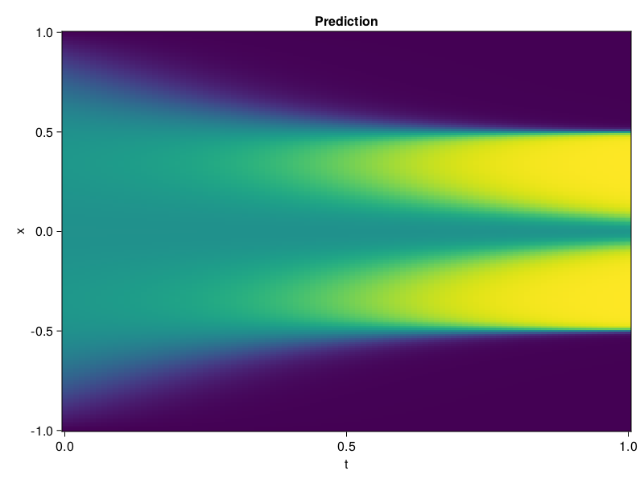

Allen-Cahn Equation with Sequential Training
In this tutorial we are going to solve the Allen-Cahn equation with periodic boundary condition from $t=0$ to $t=1$. The traning process is split into four stages, namely $t\in [0,0.25]$, $t\in [0.0,0.5]$, $t\in [0.0,0.75]$ and $t\in [0.0, 1.0]$.
using ModelingToolkit, IntervalSets
using Sophon
using Optimization, OptimizationOptimJL
@parameters t, x
@variables u(..)
Dₓ = Differential(x)
Dₓ² = Differential(x)^2
Dₜ = Differential(t)
eq = Dₜ(u(x, t)) - 0.0001 * Dₓ²(u(x, t)) + 5 * u(x,t) * (abs2(u(x,t)) - 1.0) ~ 0.0
domain = [x ∈ -1.0..1.0, t ∈ 0.0..0.25]
bcs = [u(x,0) ~ x^2 * cospi(x),
u(-1,t) ~ u(1,t)]
@named allen = PDESystem(eq, bcs, domain, [x, t], [u(x, t)])\[ \begin{align} - 0.0001 \frac{\mathrm{d}}{\mathrm{d}x} \frac{\mathrm{d}}{\mathrm{d}x} u\left( x, t \right) + 5 \left( -1 + \left|u\left( x, t \right)\right|^{2} \right) u\left( x, t \right) + \frac{\mathrm{d}}{\mathrm{d}t} u\left( x, t \right) =& 0 \end{align} \]
Then we define the neural net, the sampler, and the training strategy.
chain = FullyConnected(2, 1, tanh; hidden_dims=16, num_layers=4)
pinn = PINN(chain)
sampler = QuasiRandomSampler(500, (300, 100))
strategy = NonAdaptiveTraining(1, (50, 1))
prob = Sophon.discretize(allen, pinn, sampler, strategy)OptimizationProblem. In-place: true
u0: ComponentVector{Float64}(layer_1 = (weight = [-0.1426631361246109 -0.7181322574615479; -0.7340945601463318 1.056903600692749; … ; 1.262011170387268 0.693062424659729; 1.3656291961669922 1.566123127937317], bias = [0.0; 0.0; … ; 0.0; 0.0;;]), layer_2 = (weight = [0.5066240429878235 0.5470839142799377 … 0.13744764029979706 0.01589241251349449; 0.2409229278564453 -0.6460336446762085 … -0.06244160234928131 0.27236172556877136; … ; -0.3483552634716034 0.09316470474004745 … -0.6638941764831543 0.21440300345420837; -0.5301471948623657 -0.098084956407547 … -0.6069387793540955 0.5642238259315491], bias = [0.0; 0.0; … ; 0.0; 0.0;;]), layer_3 = (weight = [-0.3767329454421997 -0.1706172376871109 … 0.5468396544456482 0.4184414744377136; 0.7101876735687256 0.09670216590166092 … 0.09815507382154465 -0.03111988492310047; … ; 0.38761022686958313 0.5942841172218323 … -0.46019619703292847 0.13663068413734436; -0.15154044330120087 -0.3920174539089203 … 0.01578616350889206 0.284212201833725], bias = [0.0; 0.0; … ; 0.0; 0.0;;]), layer_4 = (weight = [-0.49989888072013855 -0.2460639327764511 … 0.06561592221260071 -0.029558664187788963; -0.3724459111690521 0.3461720049381256 … -0.3884468078613281 0.17795515060424805; … ; 0.4438447952270508 -0.37934377789497375 … -0.2640126049518585 0.318098783493042; 0.4698127508163452 0.07335095852613449 … -0.3089531660079956 -0.24583277106285095], bias = [0.0; 0.0; … ; 0.0; 0.0;;]), layer_5 = (weight = [0.0792582556605339 0.6734364032745361 … 0.020666837692260742 0.09496939927339554], bias = [0.0;;]))We solve the equation sequentially in time.
function train(allen, prob, sampler, strategy)
bfgs = BFGS()
res = Optimization.solve(prob, bfgs; maxiters=2000)
for tmax in [0.5, 0.75, 1.0]
allen.domain[2] = t ∈ 0.0..tmax
data = Sophon.sample(allen, sampler)
prob = remake(prob; u0=res.u, p=data)
res = Optimization.solve(prob, bfgs; maxiters=2000)
end
return res
end
res = train(allen, prob, sampler, strategy)u: ComponentVector{Float64}(layer_1 = (weight = [0.18323802828156704 -1.031822297220727; -1.200952270458203 1.4881285413757295; … ; 1.9492150592107733 -0.14714734292119303; 1.3835496242027698 1.5176075166444465], bias = [0.09312625908359615; 1.7250038306631206; … ; -0.7221781011100705; -0.8577726083141564;;]), layer_2 = (weight = [-0.03198470541977399 1.5704848027844627 … 0.2792553889048481 -0.24185540464790095; -0.028566950348211675 -0.5024695912268102 … 0.17708609875395795 0.6711180315219112; … ; -0.6351418055898951 -0.2728171271074726 … -0.5905808290417471 -0.07990952711906849; -0.15331012798234958 -0.9089368427510769 … -0.4360793582972023 -0.035654697419700676], bias = [-0.835312056718713; 0.1655765579742259; … ; -0.6172897183798408; -0.15227273320808427;;]), layer_3 = (weight = [-1.2241404277009638 -0.6138900140259876 … 0.7686094285782278 -0.015163127940785115; 0.3553321456978891 0.36457142345678534 … 0.2659406592254856 0.27564969741697565; … ; 0.45114886909837265 0.7154664285567013 … -0.7856849931697002 0.49111466866600395; 0.1059082417345654 -0.02379151983270151 … 0.2954141958556024 0.27611054495167314], bias = [0.46847430688015446; -0.04413275629206523; … ; 0.04554632353019612; -0.5837556432973158;;]), layer_4 = (weight = [-0.5827988053336759 0.41401224800677744 … 0.14358473532727573 -0.24758275996457274; -0.7426933225715217 0.7558267681545123 … -0.5421987174856691 0.32458348832202255; … ; 0.336240201820015 -0.47981983305537534 … -0.3240914156260256 0.3599687047332234; 0.4962482494430199 0.11069972301772295 … -0.19819118778187653 -0.2722333901043316], bias = [-0.31488148606667327; -0.5549723100411121; … ; -0.009959182911150617; -0.08153857215315306;;]), layer_5 = (weight = [0.3906017337285956 0.8846055433192586 … -0.12349684793399751 0.05695091607407323], bias = [-0.03957133689162798;;]))Let's plot the result.
using CairoMakie
phi = pinn.phi
xs, ts = [infimum(d.domain):0.01:supremum(d.domain) for d in allen.domain]
axis = (xlabel="t", ylabel="x", title="Prediction")
u_pred = [sum(pinn.phi([x, t], res.u)) for x in xs, t in ts]
fig, ax, hm = heatmap(ts, xs, u_pred', axis=axis)